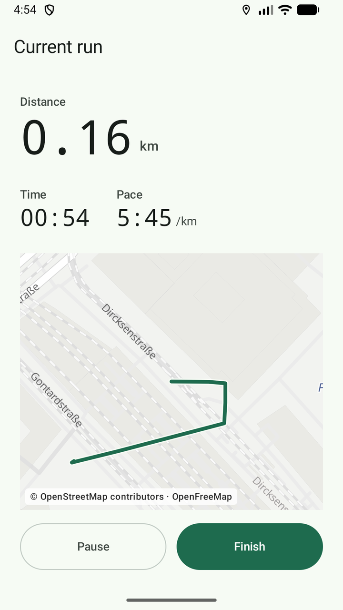
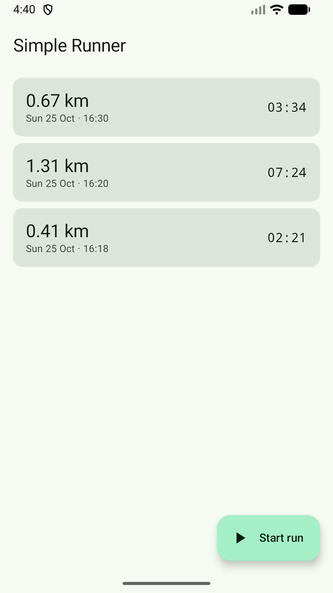
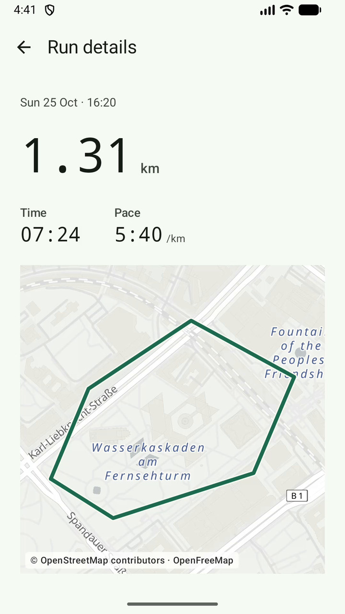

Android · Local only · Apache-2.0
Distance, time, pace. On a map. On your phone.
Simple Runner records a run with GPS and keeps it on the device. No account, no sync, no subscription. The only thing it asks of you is to press start.
Android 8.0+ About 60 MB Free, no ads

01 / Screens
Three screens.
That is the whole app.
Start, watch, look back. There is no dashboard, no feed, no streak to keep alive, and nothing to scroll through before you can run.


02 / Numbers
Three numbers, and what they actually measure.
Everything else is a timestamp in the database. These are the ones you read while breathing hard, so they are the ones worth getting right.
- Distance 1.31km
- Added up between accepted GPS fixes. A fix with worse than 35 m of accuracy is dropped, a move under one metre is ignored, and a jump that would imply 43 km/h is treated as noise rather than speed — so standing at a crossing does not add metres.
- Moving time 07:24
- Wall-clock time spent recording, with pauses excluded. Pausing at a light stops the clock and the distance together, and the gap between the two halves is never counted as running.
- Pace 5:40/km
-
Moving time divided by distance, in minutes per kilometre. It reads
--:--below 100 m, before the number means anything, and when the result would fall outside 2:00–30:00 /km.
03 / Limits
What it does not do.
Each of these is deliberate. A run recorder that grows a feed, a subscription and a social graph stops being a run recorder.
- Nothing leaves the phone
- No account, no cloud backup, no sync between devices. Runs live in the app's private database and disappear when you uninstall it.
- No trackers
- No analytics, no ads, no crash reporting, no third-party SDKs. The only network request the app makes is for map tiles.
- No always-on location
- Location is read while a run is recording, from a foreground service with a visible notification. There is no “allow all the time” permission to grant.
- No coaching
- No auto-pause, splits, audio cues, heart rate or elevation gain. It records what the GPS reports and shows it back without advice.
- No delete button
- A finished run cannot be removed from inside the app yet. That is a gap in this version, not a principle; uninstalling clears everything.
- No map offline
- Tiles come from OpenFreeMap. Without a connection the map is blank while recording carries on, and the route appears as soon as tiles load. The area you are looking at is requested from OpenFreeMap, which sees your IP address; nothing about the run is sent. More in the privacy note.
04 / Download
Get Simple Runner.
The APK is the same build Google Play serves, signed with the same app signing key, so it installs over a Play copy and updates normally. If Play offers a newer version, Play wins.
Android will ask you to allow installs from this browser the first time. That is the normal sideload prompt, not a warning about this file.